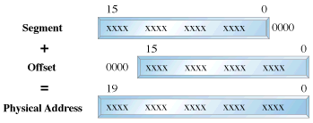
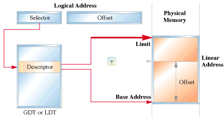
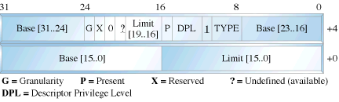

|
...making Linux just a little more fun! |
By Raghu and Chitkala |
[Krishnakumar is unable to continue this series himself due to other commitments, so he has handed it over to his junior colleagues, Raghu and Chitkala, who have written part III. -Editor.]
In Parts I and II of this series, we examined the process of using tools available with Linux to build a simple boot sector and access the system BIOS. Our toy OS will be closely modelled after a `historic' Linux kernel - so we have to switch to protected mode real soon! This part shows you how it can be done.
The 80386+ provides many new features to overcome the deficiencies of 8086 which has almost no support for memory protection, virtual memory, multitasking, or memory above 640K - and still remain compatible with the 8086 family. The 386 has all the features of the 8086 and 286, with many more enhancements. As in the earlier processors, there is the real mode. Like the 286, the 386 can operate in protected mode. However, the protected mode on 386 is vastly different internally. Protected mode on the 386 offers the programmer better protection and more memory than on the 286. The purpose of protected mode is not to protect your program. The purpose is to protect everyone else (including the operating system) from your program.
Superficially protected mode and real mode don't seem to be very different. Both use memeory segmentation, interrupts and device drivers to handle the hardware. But there are differences which justify the existence of two separate modes. In real mode, we can view memory as 64k segments atleast 16bytes apart. Segmentation is handled through the use of an internal mechanism in conjunction with segment registers. The contents of these segment registers (CS,DS,SS...) form part of the physical address that the CPU places on the addresss bus. The physical address is generated by multiplying the segment register by 16 and then adding a 16 bit offset. It is this 16 bit offset that limits us to 64k segments.
fig 1 : Real Mode Addressing

In protected mode, segmentation is defined via a set of tables called descriptor tables. The segment registers contain pointers into these tables. There are two types of tables used to define memory segmentation : The Global Descriptor Table and The Local Descriptor Table. The GDT contains the basic descriptors that all applications can access. In real mode one segment is 64k big followed by the next in a 16 byte distance. In protected mode we can have a segment as big as 4Gb and we can put it wherever we want. The LDT contains segmentation information specific to a task or program. An OS for instance could set up a GDT with its system descriptors and for each task an LDT with appropriate descriptors. Each descriptor is 8 bytes long. The format is given below (fig 3). Each time a segment register is loaded, the base address is fetched from the appropriate table entry. The contents of the descriptor is stored in a programmer invisible register called shadow registers so that future references to the same segment can use this information instead of referencing the table each time. The physical address is formed by adding the 16 or 32 bit offset to the base address in the shadow register.These differences are made clear in figures 1 and 2.
fig 2 : Protected Mode Addressing

fig 3 : Segment Descriptor Format

We have yet another table called the interrupt descriptor table or the IDT. The IDT contains the interrupt descriptors. These are used to tell the processor where to find the interrupt handlers. It contains one entry per interrupt, just like in Real Mode, but the format of these entries is totally different. We are not using the IDT in our code to switch to the protected mode so further details are not given.
The 386 has four 32 bit control registers named CR0, CR1, CR2 and CR3. CR1 is reserved for future processors, and is undefined for the 386. CR0 contains bits that enable and disable paging and protection and bits that control the operation of the floating point coprocessor. CR2 and CR3 are used by the paging mechanism. We are concerned with bit 0 of the CR0 register or the PE bit or the protection enable bit. When PE = 1, the processor is said to be operating in protected mode with the segmentation mechanism we described earlier. If PE = 0, the processor operates in real mode. The 386 also has the segmentation table base registers like GDTR, LDTR and IDTR.These registers address segments that contain the descriptor tables. The GDTR points to the GDT. The 48 bit GDTR defines the base and the limit of the GDT directly with a 32 bit linear address and a 16 bit limit.
Switching to protected mode essentially implies that we set the PE bit. But there are a few other things that we must do. The program must initialise the system segments and control registers. Immediately after setting the PE bit to 1 we have to execute a jump instruction to flush the execution pipeline of any instructions that may have been fetched in the real mode. This jump is typically to the next instruction. The steps to switch to protected mode then reduces to the following :
We'll now give the code to perform this switching.
Click here to download the code. Type in the code to a file by name abc.asm. Assemble it by typing the command nasm abc.asm. This will produce a file called abc. Then insert the floppy and type the following command dd if=abc of=/dev/fd0. This command will write the file abc to the first sector of the floppy. Then reboot the system. You should see the following sequence of messages.
We'll first give the code to perform the switching. It is followed by a detailed explanation.
As mentioned in the previous article (Part 1) the BIOS selects the boot device and places the first sector into the address 0x7c00. We thus start writung our code at 0x7c00.This is what is implied by the org directive.
print_mesg: This routine uses the subfunction 13h of BIOS interrupt 10h to write a string to the screen.The attributes are specified by placing appropriate values in various registers. Interrupt 10h is used for various string manipulations.We store the subfn number 13h in ah which specifies that we wish to print a string. Bit 0 of the al register determines the next cursor position;if it is 0 we return to the beginning of the next line after the function call, if it is 1 the cursor is placed immediately following the last character printed.
The video memory is split into several pages called video display pages.Only one page can be displayed at a time(For further details on video memory refer Part 1).The contents of bh indicates the page number,bl specifies the colour of the character to be printed. cx holds the length of the string to be printed.Register dx specifies the cursor position. Once all the attributes have been initialised we call BIOS interrupt 10h.
get_key: We use BIOS interrupt 16h whose sub function 00h is used to get the next character from the screen. Register ah holds the subfn number.
clrscr: This function uses yet another subfn of int 10h i.e 06h to clear the screen before printing a string.To indicate this we initialise al to 0.Registers cx and dx specify the window size to be cleared;in this case it is the entire screen. Register bh indicates the colour with which the screen has to be filled;in this case it is black.
The first assembly language statement is a short jump to the begin_boot code.We intend to print a brown 'A'in real-mode,set up a GDT,switch to protected mode and print a white 'A'.Both these modes use their own addressing methods.
In Real-Mode :
We use segment register gs to point to video memory.We use a CGA adapter(default base address 0xb8000).But hey we have a missing 0 in the code.Well the Real-mode segmentation unit provides the additional 0.This is a matter of convenience,as the 8086 usually does a 20bit address manipulation.This has been carried over in the real-mode addressing of the 386.The ascii value for A is 0x41;0x06 specifies that we need a brown coloured character.The display stays till we press a key.Next let us display a message on the screen saying we are going to the world of protected mode.So let us point the bp(base pointer register to the message to be printed).
Launchpad to the protected mode :
We don't need any interrupts bothering us,while in protected mode do we ?So lets disable them(interrupts that is).That is what cli does. We will enable them later.So lets start by setting up the GDT.We initialise 4 descriptors in our attempt to switch to protected mode. These descriptors initialise our code segment(code_gdt), data and stack segments (data_gdt) and the video segment in order to access the video memory. A dummy descriptor is also initialised although it's never used except if you want to triple fault of course. This is a null descriptor. Let us probe into some of the segment descriptor fields.
The GDT base address has to be loaded into GDTR system register. The gdtr segment is loaded with the size of the GDT in the first word and the base address in the next dword. The lgdt instruction then loads the gdt segment into the GDTR register.Now we are ready to actually switch to pmode. We start by setting the least significant bit of CR0 to 1( ie the PE bit).We are not yet in full protected mode!
Section 10.3 of the INTEL 80386 PROGRAMMER'S REFERENCE MANUAL 1986 states : Immediately after setting the PE flag,the initialization code must flush the processor's instruction prefetch queue by executing a JMP instruction.The 80386 fetches and decodes instructions and addresses before they are used; however, after a change into protected mode, the prefetched instruction information (which pertains to real-address mode) is no longer valid. A JMP forces the processor to discard the invalid information.
We are in protected mode now. Want to check it out? Let's get our A printed in white. For this we initialise the data and extra segments with the data segment selector (datasel). Initialise gs with the video segment selector (videosel). To display a white 'A' move a word containing the ascii value and attribute to location [gs:0000] ie b8000 : 0000. The spin loop preserves the text on the screen until the system is rebooted.
The times instruction is used to fill in 0s in the remaining unused bytes of the sector.To indicate that this is a bootable sector we write AA55 in bytes 511,512. That's about all.
 Raghu and Chitkala
Raghu and Chitkala